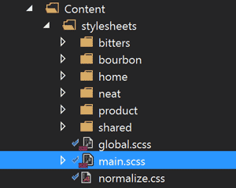
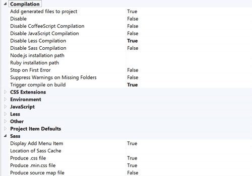
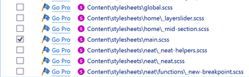

Using Sass in Visual Studio
November 12, 2014
Some may find themselves developing the front end of web applications in .NET and Visual Studio. If that’s you, I’m sorry (at least until the new cross platform open source versions come out).
If you use Sass, as hopefully you do if you’re reading this, you will find yourself frustrated by the fact that Web Essentials for VS advertised as being capable of Sass compilation, but actually isn’t. The following outline is the only way I’ve been able to get Sass working in Visual Studio. This has been tested in VS 2012 and 2013.
Download Mindscape Web Workbench here and make sure to enable it in VS at
Tools > Extenstions and Updates. You might have to restart VS.Hopefully you have a “main.scss” type file in your stylesheets directory that contains all your imports and will eventually compile into a singular minified file called in your markup (this can be added by right-clicking the stylesheets folder, and going to
Add > New Item > SCSS Stylesheet (Sass), then name appropriately):
Go to
Tools > Optionsand select Web Workbench from the list. Adjust the settings so that:Compilation > Trigger compile on build = True
Compilation > Disable Sass compilation = False
Sass > Produce .css file = True

In the toolbar, got to
Mindscape > Web Workbench Settingsand make sure the only checkbox selected under Compile is your “main.scss” file mentioned earlier. Uncheck all the rest unless you want a million extra css files and an hour-long build:
Now your main.scss file will compile on build (and save, depending on your settings) and generate a main.css file in the same directory that is minifiable and browser-readable.
And thats it. Now you can write your Sass and keep your modular style structure nice and happy in Visual Studio and .NET projects. Hopefully this post will be deprecated at the release of the new versions.